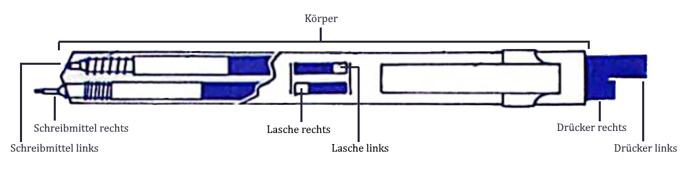
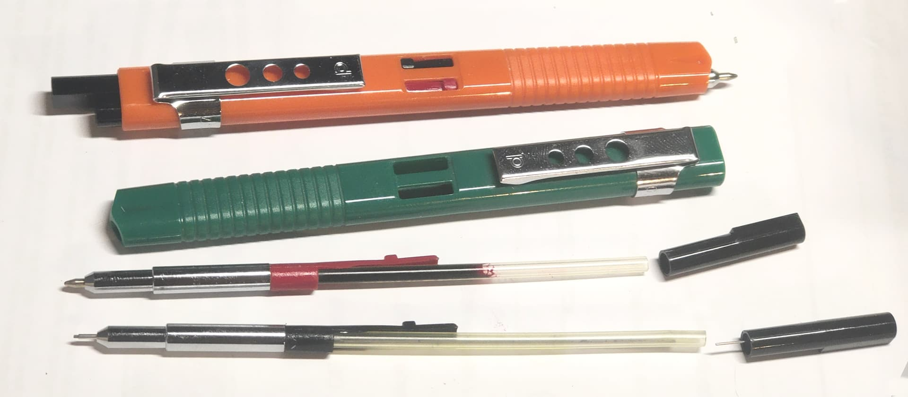

Platinum Double Action / One-Two Pen
プラチナ ダブル アクション / ワンツーペン
Stand: 03.07.2026
Der "Platinum Double Action" ist ein japanischer Zweifarbstift, der 1978 vom Hersteller Platinum Pen Co. Ltd. (プラチナ萬年筆株式会社) hergestellt wurde.
Nicht zu verwechseln mit dem heute noch erhältlichen gleichnamigen Dreh-Mehrfarbstift, oder noch früheren, ebenfalls unter 'Double Action' verkauften Stiften (es gibt unzählige).
Deshalb wird der hier vorgestellte auch als "Initial Type" (最初期型) bezeichnet.
Der "One-Two Pen" (ワンツーペン) (siehe weiter unten) ist eine mechanisch identische Alternativversion, welche als Geschenk zu 小4時代-Magazinen von 旺文社 beigelegt wurde.

Der Stift hat zwei Schreibmittel, welche parallel zueinander aus jeweils ihrer eigenen Schreiböffnung unabhängig der anderen vorgeschoben werden können.
Dafür wird jeweils ein Druckknopf an der Rückseite des Stifts genutzt.
Andere Stifte mit zwei Schreiböffnungen sind der OHTO Dagger oder der Bolascrip-Zweifarbkugelschreiber.
Alle Versionen des Stifts haben mindestens einen Druckbleistift. Dafür wird ein typischer für Mehrfarbstifte ausgelegter Druckbleistiftmechanismus genutzt.
Um die Mine inkremental vorzuschieben, wird der zugehörige Drücker wiederholt gedrückt.
Die Feststellung und Lösung der Schreibmittel findet über eine Lasche statt, die zum Lösen mit dem Finger eingedrückt werden muss.
Durch den Aufbau mit dem Schreibmittel eigenem Druckknopf wurde es möglich, die Druckbleistiftminen von hinten nachzuladen. Der Druckknopf lässt sich abziehen. In das freigelegte Loch werden nun einfach Minen eingeworfen.
Diese Funktion hat wohlmöglich erst der Zebra Sharbo Nu 2019 wieder realisiert.
Für Detailaufnahmen vom Stift besuchen Sie bitte diese Webseite:
https://note.com/willwillcats/n/n3f7601325dc1 .
Double Action
Wie anfangs erwähnt stellt dieser Platinum Double Action den ersten einer bis heute andauernden Schreibgerätereihe dar, weshalb die Internetsuche erst mit 最初期型 (Erstversion) erfolgreich ist.'Double Action' bezog sich auf die zwei Arten der Betätigung; einmal als Druckbleistift und dann als Kugelschreiber.
Doch mit dieser Definition nahm man es seit Beginn selbst nicht so genau, weil schon von der ersten Version Varianten ohne Kugelschreiber existieren.
Andere spätere Stifte hatten außerdem z.B. einen (Stylus/入力ペン), Radierer, oder ausschließlich Kugelschreiber.
Der Mechanismus des in diesem Artikel behandelten ersten Double Action blieb einzigartig bei Platinum. Nachfolgende Stifte der Reihe haben meist einen Drehmechanismus und manchmal einen Sichtwahlmechanismus.
Variationen-Übersicht
| Körperfarbe | Drückerfarbe links | Drückerfarbe rechts | Laschenfarbe links | Laschenfarbe rechts | Schreibmittel links | Schreibmittel rechts |
|---|---|---|---|---|---|---|
| | | | | | Kugelschreiber schwarz | Druckbleistift 0.5mm |
| | | | | | Kugelschreiber schwarz |
Druckbleistift 0.5mm |
|
| | | | | | Kugelschreiber schwarz |
Druckbleistift 0.5mm |
|
| | | | | | Druckbleistift 0.9mm rot |
Druckbleistift 0.5mm |
|
| | | | | | Druckbleistift 0.9mm rot | Druckbleistift 0.5mm |
| | |
| | | Druckbleistift 0.9mm rot | Druckbleistift 0.5mm |
| | |
| | | ? | ? |
| | |
| | | ? | ? |
One-Two Pen

Der One-Two Pen (ワンツーペン) ist eine ebenfalls 1978 hergestellte Sonderversion für den Bildungsverlag 旺文社 (Obunsha).
Man erhielt den Stift als Geschenk zum Abschluss eines Jahresabonnements des von Obunsha vertriebenen Magazins 小4時代, einem Lernmagazin für Viertklässler.
Vermarktet wurde der One-Two Pen im Kontext des Baseballspielers 王貞治 (Sadaharu Oh), welcher 1980 in den Ruhestand ging.
Der Stift trägt seine Unterschrift auf der Rückseite und Bilder von ihm befinden sich auf der Verpackung und enthaltenen Broschüren.
Variationen-Übersicht
| Körperfarbe | Drückerfarbe links | Drückerfarbe rechts | Laschenfarbe links | Laschenfarbe rechts | Schreibmittel links | Schreibmittel rechts |
|---|---|---|---|---|---|---|
| | |
| | | Kugelschreiber rot | Druckbleistift 0.5mm |
| | |
| | | Kugelschreiber rot | Druckbleistift 0.5mm |
| | |
| | | Kugelschreiber rot | Druckbleistift 0.5mm |